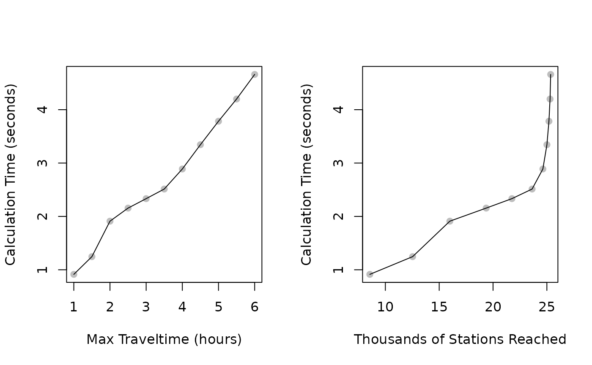

vignettes/traveltimes.Rmd
traveltimes.Rmdgtfsrouter includes a function, gtfs_traveltimes(),
to efficiently calculate travel times from a nominated station to all
other stations within a GTFS feed. The function takes only two main
parameters, the first specifying a departure station, and the second
specifying a pair of start_time_limits determining the
earliest and latest possible departure times from that station. The
function will then return the fastest connections to all possible end
stations for services departing within the specified
start_time_limits.
For example, travel times to all stations for services leaving a
nominated station between 12:00 and 13:00 can be extracted by specifying
start_time_limits = c (12, 13) * 3600. The following code
uses the internal Berlin data to demonstrate, starting by reading the
GTFS data and constructing a timetable for a specified day. This second
step, achieved by calling the gtfs_timetable()
function, is necessary prior to calculating travel times.
## [1] "/tmp/RtmpHu26Nl/vbb.zip"
f <- file.path (tempdir (), "vbb.zip")
gtfs <- extract_gtfs (f, quiet = TRUE)
gtfs <- gtfs_timetable (gtfs, day = 3)The gtfs_traveltimes(),
function may then be called by specifying a start station
(from), and start_time_limits, as in the
following code:
from <- "Alexanderplatz"
start_time_limits <- c (12, 13) * 3600
tt <- gtfs_traveltimes(gtfs,
from = from,
start_time_limits = start_time_limits)
head(tt)## start_time duration ntransfers stop_id stop_name stop_lon
## 1 12:00:42 00:14:42 1 060003102223 S Bellevue (Berlin) 13.34710
## 2 12:00:42 00:08:36 0 060003102224 S Bellevue (Berlin) 13.34710
## 3 12:00:42 00:15:06 1 060003103233 S Tiergarten (Berlin) 13.33624
## 4 12:00:42 00:10:42 0 060003103234 S Tiergarten (Berlin) 13.33624
## 5 12:00:42 00:14:18 1 060003201213 S+U Berlin Hauptbahnhof 13.36892
## 6 12:00:42 00:05:54 0 060003201214 S+U Berlin Hauptbahnhof 13.36892
## stop_lat
## 1 52.51995
## 2 52.51995
## 3 52.51396
## 4 52.51396
## 5 52.52585
## 6 52.52585The function returns a data.frame in which each row
details the fastest connection to each station, in terms of the start
time and duration of that trip, as well as the number of transfers
necessary.
The previous code returns a data.frame detailing
traveltimes for the following stations:
nrow (tt)## [1] 689This relatively low number is because the berlin_gtfs_to_zip()
function creates only a small sample portion of a full feed,
extending over only one hour and containing a small number of stations.
The total number of stations reachable from the Alexanderplatz station
during these times are:
nrow (gtfs$stops)## [1] 957The gtfs_traveltimes(),
returns travel times to only a subset of all potentially reachable
stations (689 instead of 957) for two main reasons. First, not all
stations may actually be reachable from a given station, and travel
times will only be returned for those that are. Secondly, the gtfs_traveltimes(),
function has an additional parameter, max_traveltime, and
only returns travel times to stations able to be reached within this
upper limit. The default value is 3600, or one hour. For the token feed
used here, the maximum travel times returned are:
hms::hms (as.integer (max (tt$duration)))## 00:58:00In this case that value actually reflects the restricted data included in the sample data set, but applying the function to an actual GTFS feed will by default record traveltimes to all stations reachable within one hour. The following shows a more realistic example using a full version of the Berlin GTFS data:
gtfs <- extract_gtfs ("/<path>/<to>/vbb.zip")
gtfs <- gtfs_timetable (gtfs, day = 3)
tt <- gtfs_traveltimes (gtfs,
from = from,
start_time_limits = start_time_limits)
nrow (tt); hms::hms (as.integer (max (tt$duration)))
## [1] 8556
## 01:00:00The number of stations reached in the full feed is far more, and the
maximum trip duration is indeed precisely one hour. This parameter of
max_traveltime defaults to the relatively short value of
one hour because calculation times increase non-linearly with numbers of
stations reached. The following graphs show calculation times as a
function both of max_traveltime, and numbers of stations
reached.
maxt <- 3600 + 0:10 * 1800 # 1-6 hours in half-hour intervals
dat <- vapply (maxt, function (i) {
st <- system.time (
res <- gtfs_traveltimes (gtfs,
from = from,
start_time_limits = start_time_limits,
max_traveltime = i)
)
return (c (st [3], nrow (res))) },
numeric (2))
dat <- data.frame (max_time = maxt / 3600, # in hours
calc_time = dat [1, ],
n_stns = dat [2, ] / 1000)
par (mfrow = c (1, 2))
plot (dat$max_time, dat$calc_time, pch = 19, col = "gray",
xlab = "Max Traveltime (hours)",
ylab = "Calculation Time (seconds)")
lines (dat$max_time, dat$calc_time)
plot (dat$n_stns, dat$calc_time, pch = 19, col = "gray",
xlab = "Thousands of Stations Reached",
ylab = "Calculation Time (seconds)")
lines (dat$n_stns, dat$calc_time)
Those graphs show that increasing the max_traveltime
parameter leads to approximately linear increases in the calculation
times required for gtfs_traveltimes(),
to execute, while relationships with numbers of stations actually
reached are highly non-linear. The panel on the right side shows that
increases in max_traveltime eventually have little effect
on increasing numbers of stations reached, yet increases computation
times considerably. Values for max_traveltime should
accordingly only be adjusted after first determining appropriate values.
In particular, note that although the Berlin GTFS has a large number of
distinct stops:
nrow (gtfs$stops)
## [1] 41577Many of these reflect stop_id values for multiple
platforms at a single station. The number of distinct stop names is in
fact much less:
A rule-of-thumb is to increase the max_traveltime
parameter until the number of stations reached exceeds by some small
amount the total number of actual stops in a system. In the case of
these Berlin data, a maximum traveltime of 2 hours is sufficient.
nrow (gtfs_traveltimes (gtfs,
from = from,
start_time_limits = start_time_limits,
max_traveltime = 7200))
## [1] 15989These additional stations reached naturally tend to be stations on
the periphery of the system, while doubling the
max_traveltime parameter approximately doubles the
calculation time (in this case, according to the graphs shown above).
Appropriate values will depend on the nature of desired results.
Analyses focussed on more central parts of a system can use smaller
values, with shorter corresponding calculation times. Analyses for which
peripheral stations are important may need to use larger values of
max_traveltimes, yet should do so carefully to avoid undue
increases in calculation times.
The gtfs_traveltimes(),
function has an additional parameter, minimise_transfers,
which can be used to return either the fastest possible connections from
a start station to all other reachable stations within a system, or the
fastest connection which has the least possible number of transfers.
Connections with the least transfers may be slower than fastest possible
connections, as shown by the following analysis.
tt_fastest <- gtfs_traveltimes (gtfs,
from = from,
start_time_limits = start_time_limits)
tt_min_tr <- gtfs_traveltimes (gtfs,
from = from,
start_time_limits = start_time_limits,
minimise_transfers = TRUE)
# non-dplyr join:
tt_fastest <- tt_fastest [tt_fastest$stop_id %in% tt_min_tr$stop_id, ]
tt_min_tr <- tt_min_tr [tt_min_tr$stop_id %in% tt_fastest$stop_id, ]
dat <- data.frame (stop_id = tt_fastest$stop_id,
fastest_dur = as.numeric (tt_fastest$duration / 3600), # hours
fastest_ntr = tt_fastest$ntransfers,
min_tr_dur = as.numeric (tt_min_tr$duration / 3600),
min_tr_ntr = tt_min_tr$ntransfers)
60 * mean (dat$min_tr_dur - dat$fastest_dur) # in minutes
## [1] 3.957052
mean (dat$fastest_ntr - dat$min_tr_ntr)
## [1] 0.2818428Minimal-transfer trips take on average just under 4 minutes longer, while requiring 0.28 fewer trips. Most fastest trips are nevertheless also minimal-transfer trips, as can be seen by the number of identical values returned by these two queries.
So almost 70% of faster trips are also trips with fewest number of transfers, with around 30% of fastest trips involving more than the minimal possible number of transfers.
The gtfs_traveltimes(),
is based on a new algorithm specifically developed for this package, and
which will be described here in further detail in subsequent releases of
the package.